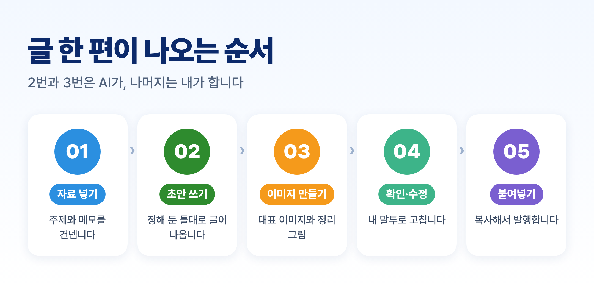
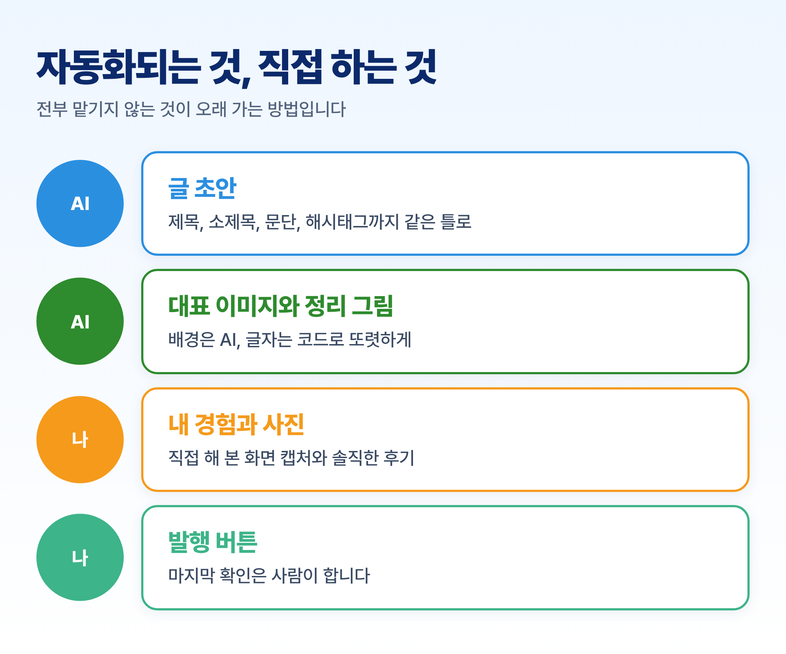

〔이미지 ① 넣는 자리: cover.jpg〕
블로그 글쓰기 자동화 ① 전체 흐름
블로그 글 한 편에 두세 시간씩 쓰고 계신가요? 이 글에서는 주제만 넣으면 글 초안과 이미지가 같이 나오는 자동화 흐름을 소개합니다. 어렵지 않아요. 순서만 알면 누구나 따라 할 수 있습니다.
■ 글쓰기가 왜 이렇게 오래 걸릴까요?
글을 쓰는 시간보다 준비하는 시간이 더 깁니다. 제목을 고민하고, 소제목을 나누고, 대표 이미지를 만들고, 해시태그를 고르다 보면 정작 하고 싶은 이야기는 뒤로 밀립니다.
그런데 잘 쓰인 블로그 글을 여러 편 놓고 보면 공통점이 있습니다. 틀이 거의 같다는 점입니다.
틀이 같다면, 틀을 채우는 일은 AI에게 맡길 수 있습니다.
■ 글 한 편은 이런 순서로 나옵니다
사용하는 도구는 클로드 코드(Claude Code)입니다. 여기에 '스킬'이라는 기능이 있는데, 쉽게 말해 AI에게 미리 건네 두는 업무 매뉴얼입니다. 한 번 만들어 두면 다음부터는 주제만 말하면 됩니다.
〔이미지 ② 넣는 자리: flow.png〕
자료 넣기부터 붙여넣기까지 다섯 단계

▶ 글의 틀 | 한 번 정해 두면 계속 씁니다
스킬 안에는 글의 순서가 적혀 있습니다. 대표 이미지, 세 문장 요약, 큰 소제목, 작은 소제목, 그리고 문단 끝의 굵은 한 줄 결론입니다.
AI는 이 순서를 그대로 따라 초안을 씁니다. 글마다 형식이 흔들리지 않으니 블로그 전체가 정돈되어 보입니다.
매번 구조를 고민하지 않아도 되는 것, 이것이 가장 큰 시간 절약입니다.
▶ 이미지 | 배경은 AI가, 글자는 코드가
AI에게 그림 속 한글까지 맡기면 글자가 뭉개지는 일이 자주 생깁니다. 그래서 역할을 나눕니다. 배경 그림만 AI가 그리고, 제목 글자는 코드로 얹습니다.
일정표나 순서도 같은 정리 그림도 같은 방식입니다. 내용만 바꿔 넣으면 같은 디자인으로 다시 나옵니다.
글자를 코드로 얹으면 오타가 나도 다시 그릴 필요 없이 고쳐서 다시 뽑으면 됩니다.
▶ 미리보기 | 복사해서 붙여넣기만 합니다
마지막으로 미리보기 화면이 하나 만들어집니다. 제목 복사, 본문 복사 버튼이 있어서 네이버 블로그 글쓰기 창에 그대로 붙여넣으면 됩니다.
이미지는 본문에 '넣는 자리' 표시가 되어 있어서, 그 자리에 올리기만 하면 됩니다.
〔이미지 ③ 넣는 자리〕
복사용 미리보기 화면
직접 넣을 사진·화면 캡처: 미리보기 화면에서 본문 복사 버튼을 누르는 모습
■ 전부 자동으로 하지 않는 이유
발행 버튼까지 자동으로 누르게 만들 수도 있지 않을까, 궁금하실 수 있습니다. 저는 권하지 않습니다. 네이버 블로그는 글을 대신 올려 주는 공식 통로를 열어 두지 않았고, 자동 로그인 프로그램은 계정에 불이익이 생길 수 있습니다.
무엇보다 내 이름으로 나가는 글입니다. 초안은 AI가 쓰더라도 내 경험 한 줄, 내가 찍은 화면 한 장은 직접 넣어야 읽는 분이 믿을 수 있습니다.
〔이미지 ④ 넣는 자리: parts.png〕
AI에게 맡기는 일과 내가 하는 일

준비는 AI에게, 마지막 확인은 내가. 이 조합이 가장 오래 갑니다.
■ 시작할 때 필요한 것
• 클로드 코드를 쓸 수 있는 계정
• 쓰고 싶은 주제 한 줄과 간단한 메모
• 직접 찍은 사진이나 화면 캡처 한두 장
다음 글에서는 스킬에 무엇을 적어 두는지, 실제 내용을 하나씩 보여 드리겠습니다.
글쓰기가 부담이라 블로그를 미루고 계셨다면,
틀을 만드는 일부터 시작해 보세요.
여러분도 할 수 있어요.
#블로그자동화 #블로그글쓰기 #클로드코드 #클로드스킬 #AI글쓰기 #네이버블로그 #업무자동화 #바이브코딩 #1인창업 #직장인부업 #AI활용 #글쓰기자동화